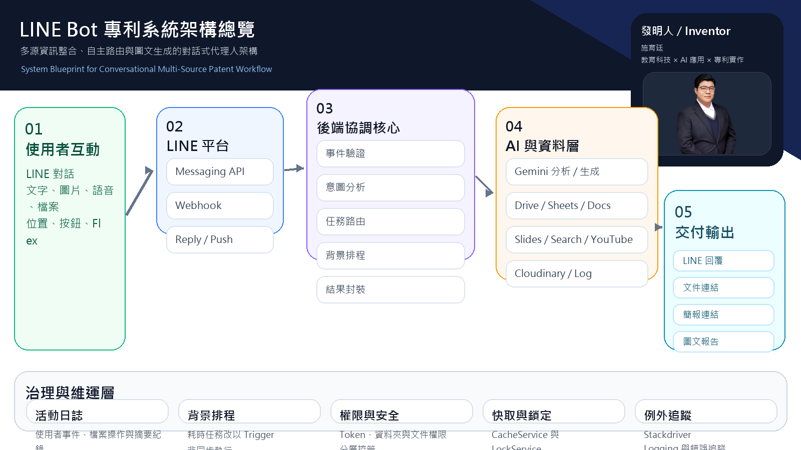

實作回覆Bot與Sheets紀錄
依序完成Node／Cloud Run驗簽入口、GAS簽名紀錄端與Sheets流程。Python磨課師僅為延伸學習，非必修，也不能替代此實作。
專利脈絡

若把 LINE Bot 看成單一入口，後續就能延伸到多來源資訊整合、自動化內容生成與對話式工作流。這也與施育廷的代表專利主題相呼應。
代理流程思考
進階應用的核心不只是 AI 能回答，而是系統是否能依序完成接收、判斷、查詢、生成、儲存與通知。這正是從聊天機器人走向代理系統的差異。
教學延伸方式
- 把單一問答功能擴充成任務型流程，例如檔案上傳後自動摘要與分類。
- 加入回寫紀錄與教師審核節點，讓 Bot 能用於教學與評量輔助。
- 把 LINE 作為前台，再串接 Google 文件、簡報或其他資料服務做輸出。
適合的專題方向
- 課程助教與教材整理 Bot。
- 研究文獻摘要與知識庫 Bot。
- 校務資訊查詢與行政支援 Bot。
- 多步驟 AI Agent 與對話式工作流專題。